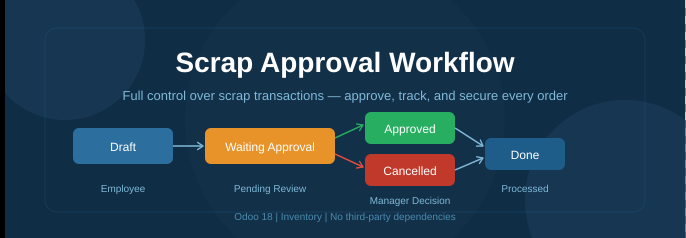
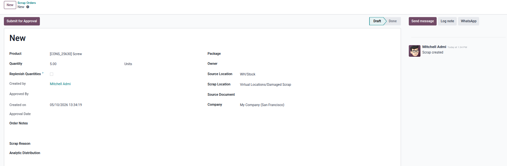
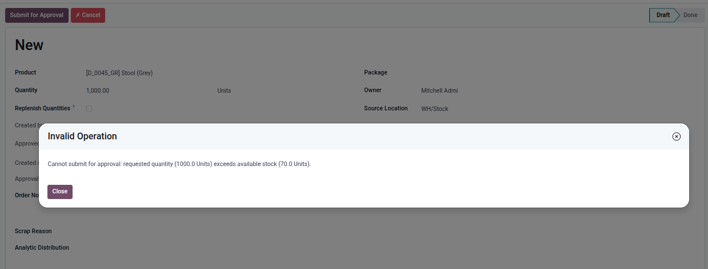
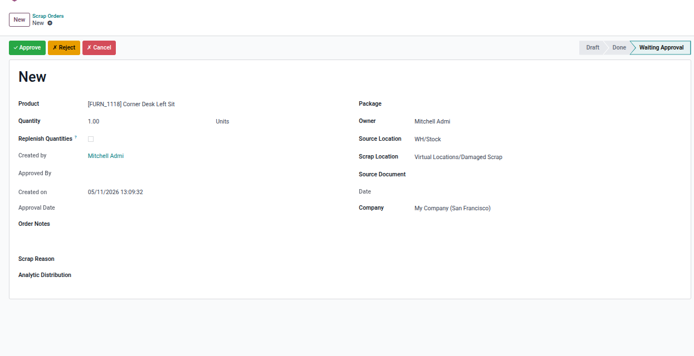
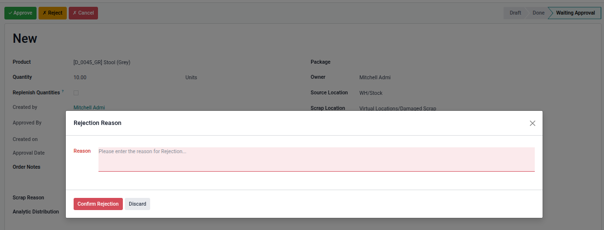
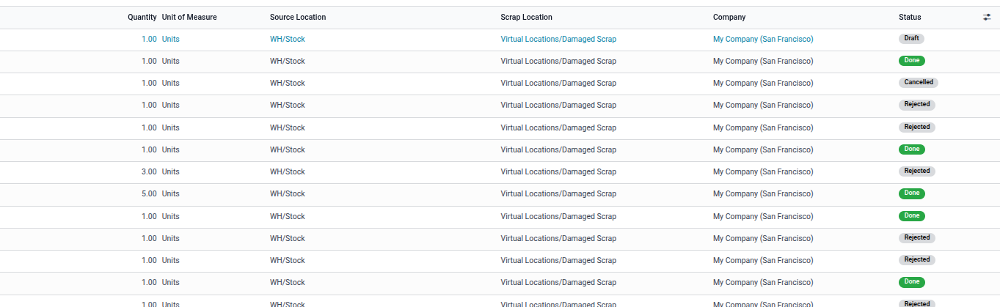
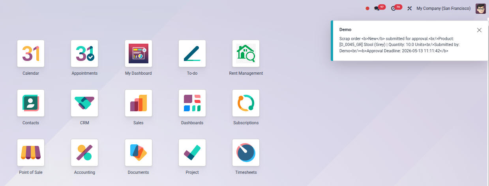
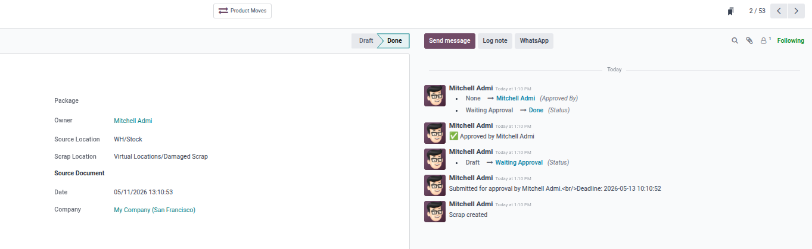

Take full control of your scrap transactions. Eliminate human errors, enforce manager approval, and maintain complete traceability on every scrap order.
A dedicated Scrap Operations Manager group is included in the module. Only assigned managers can approve or cancel scrap orders.
Each employee sees only their own scrap orders. The Operations Manager has full visibility across all records.
Every decision is recorded automatically — who approved or cancelled the order and the exact date and time.
The system validates the requested quantity against available stock both at submission and approval time. Orders exceeding available stock are blocked with a clear error message.
The standard Validate button is removed. Orders can only be processed after passing through the full approval workflow.
The Operations Manager can add notes or remarks directly on the scrap order before making a decision.
Cancelled orders can be reset to Draft for correction and resubmission without losing any history.
Draft state — employee creates the scrap order and submits it for approval with one click.

.
The system validates the requested quantity against available stock both at submission and approval time. Orders exceeding available stock are blocked with a clear error message.

.
The Operations Manager can now reject scrap orders with a mandatory reason. A popup appears to capture the rejection reason before changing the status to Rejected. Users can cancel scrap orders directly from Draft or Waiting Approval status without going through the approval process. Every submitted scrap order automatically gets a 48-hour approval deadline. A scheduled job notifies the Operations Manager when orders are overdue.


.
Scrap orders list showing approval status (Waiting Approval state - Canceled - Rejected - Done) for each order with instant manager

.
When a scrap order is submitted, all assigned managers receive an instant internal notification with full order details including product name and quantity

.
Every action (submit, approve, reject, cancel, reset) is automatically logged in the chatter with the user name and timestamp for full traceability.

.
| Odoo Version | 18.0 |
| Category | Inventory |
| Author | Nooh Suliman |
| Dependencies | Stock |
| nooh8586@gmail.com |